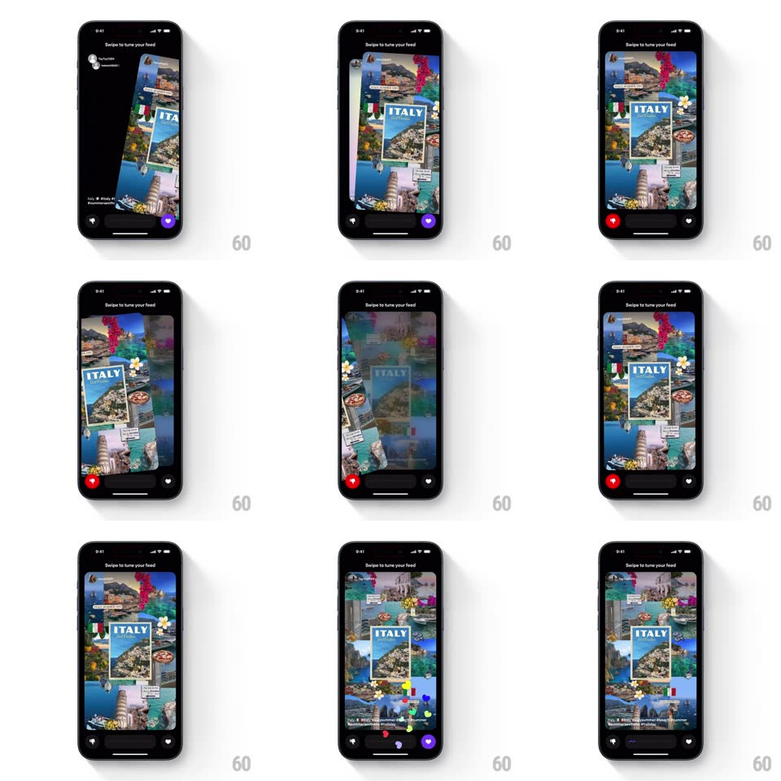

Media
Frame-by-frame

Rebuild this interaction 1:1: Shuffles' left-right swipe tuning - full-screen collage cards on black ("Swipe to tune your feed"); dragging swipes the card with tilt, corner heart/pass buttons react and scale, the background gradient shifts color with drag direction, and a liked card bursts floating hearts.

Rebuild this interaction 1:1: Shuffles' left-right swipe tuning - full-screen collage cards on black ("Swipe to tune your feed"); dragging swipes the card with tilt, corner heart/pass buttons react and scale, the background gradient shifts color with drag direction, and a liked card bursts floating hearts.
## Integration
Integration: stack-agnostic spec - springs given as stiffness/damping, timed motions as duration + curve; map every value to your framework and animation library of choice.
## Scene
A black screen with a large collage card filling most of the frame (an ITALY mood board - travel photos, postcard, flowers). Bottom corners hold circular reaction buttons: pass (left, grey/red) and heart (right, purple). The next card peeks behind.
## Motion spec
Pattern: drag-to-judge card with reactive chrome.
- Horizontal drag: the card follows the finger with rotateZ proportional to drag (up to +/-15deg) - the top edge leads, pivot near the card's center.
- Dragging right: the background gradient warms (shifts toward purple/pink from the right edge, coupled to drag distance) and the heart button scales up (1 -> 1.2) and fills purple; dragging left mirrors it (cool grey shift, pass button scales and fills red).
- Release past threshold right: the card flings off (450ms, ease-in, keeps its rotation) and 5-8 small hearts float up from the heart button (staggered 60ms, rise 60px, fade, 700ms).
- Release left: card flings off left, no hearts, a single grey puff.
- The next card scales up into place (0.94 -> 1, spring ~350/22, 300ms) as the background gradient settles back to neutral black.
## Calibration
- Button scale and gradient are scrubbed by drag distance - they reverse if the drag reverses.
- The fling inherits finger velocity - a fast flick exits fast.
## Reduced motion
Cards slide off without rotation; buttons change state without scaling.
## Don't miss
- The collage has depth: photos sit at slightly different scales/rotations, and they parallax subtly during the drag (inner photos move at 0.9x the card).
- The heart button rests purple-outlined and fills solid only past the like threshold.